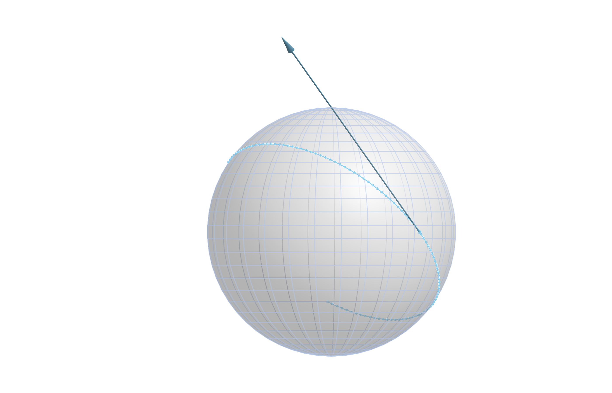
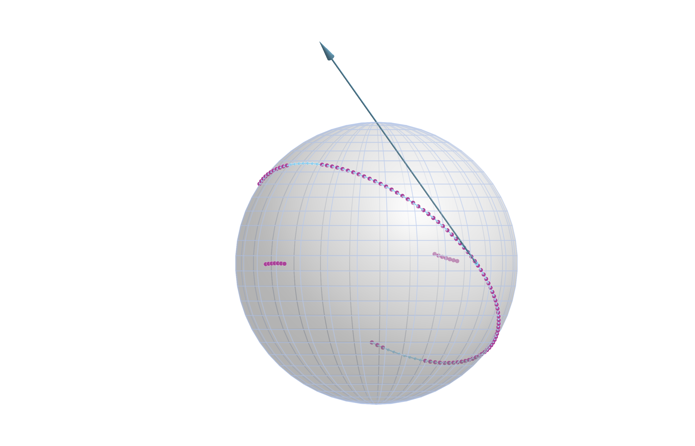
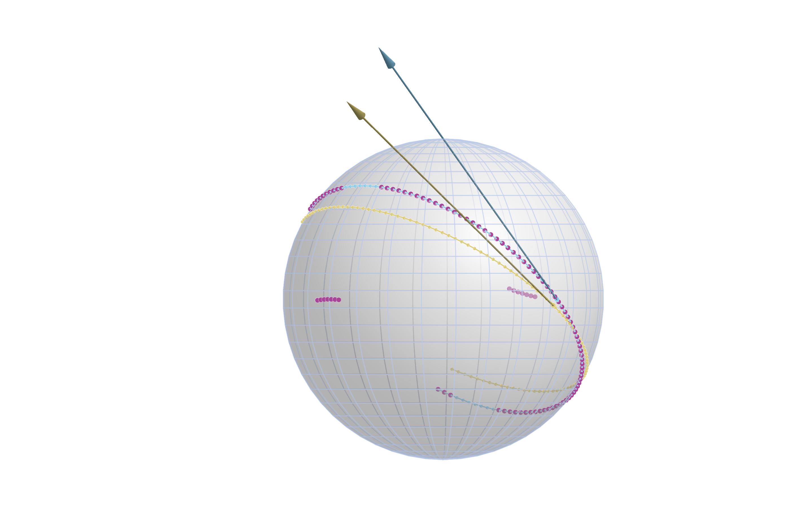
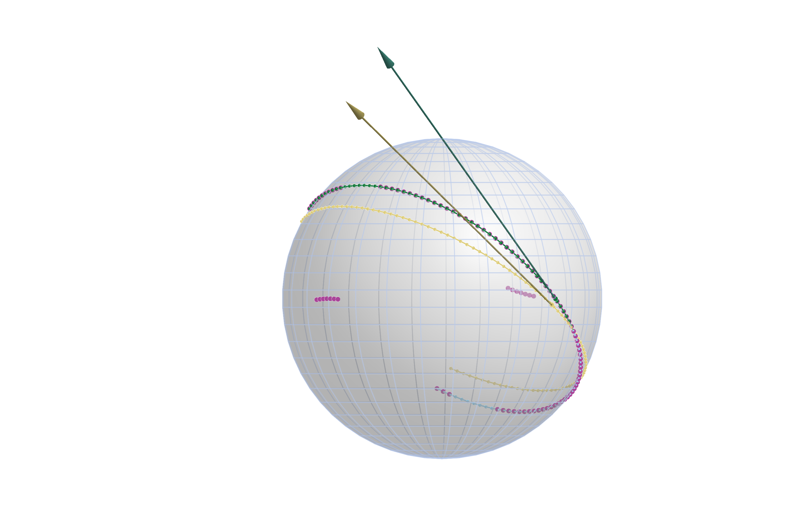

Robust Geodesic Regression
Ronny Bergmann 2026-07-04
Prequel
This notebook reproduces the results and images of Section 6.1 in [BB26]. We use the following packages and parameters
using Colors, Distributions, GeometryBasics, GLMakie, Makie, ManifoldDiff, Manifolds, Manopt, NamedColors, Random, RecursiveArrayTools
## Set the interval we sample the points from on the geodesic
T = 1.0
## Number of points along the geodesic on [-T,T]
N = 100
## Outlier parameters
### Distance the outliers are moved
r = π / 4
### Number of outliers per each segment
oN = 7
## And set these slightly asymmetric
outlier_indices = [4:(4 + oN - 1)..., [(N - 11):-1:(N - 11 - oN + 1)...]...];
## Plotting colors
ptc = NamedColors.load_paul_tol()
orig_color = ptc["mutedcyan"]
noisy_color = ptc["mutedpurple"]
lsq_color = ptc["mutedsand"]
robust_color = ptc["mutedgreen"]Introduction
For robust geodesic regression on a Riemannian manifolds $\mathcal M$ consider $m \in \mathbb N$ points $q_1,\ldots,q_m \in \mathcal M$ thereon associated to scalar values $t_1,\ldots,t_m \in \mathbb R$. We further denote the geodesic starting in a point $p \in \mathcal M$ in direction $X \in T_p\mathcal M$ by The task of geodesic regression is given as the problem on the tangent bundle $T\mathcal M$ to find the geodesic $\gamma_{p,X}$, i.e. both $p$ and $X$, that “best fits” the data with $\gamma_{p,X}(t_i) \approx q_i$, $i=1,\ldots,m$, where we still have the freedom to choose in what sense we mean to address the approximately equal condition. We consider
\[\operatorname*{argmin}_{(p,X) \in T\mathcal M} \sum_{i=1}^m \rho\bigl( d_{\mathcal M}^2( \gamma_{p,X}(t_i), q_i) \bigr),\]
where $\rho$ is a robustifier applied to every summand. Choosing $\rho(x) = x$ we get the classical (least squares) geodesic regression [Fle13]. Here we want to consider approximations of the case where $\rho(x) = \sqrt{x}$, where the sum reduces to the sum of distances or the robust geodesic regression. Since that is no longer differentiable, we use a scaled version of the Huber robustifier.
Setup
We first setup the manifold, the true point, tangent vector, and data
S = Manifolds.Sphere(2)
M = TangentBundle(S)and the original data as
p_true = [0.0, 1.0, 0.0]
X_true = π / 2 .* [1.0, 0.0, 1.0]
ts_true = collect(range(; start = -T, stop = T, length = N))
qs_true = geodesic(S, p_true, X_true, ts_true)
geo_line = geodesic(S, p_true, X_true, range(-T, T; length = 1000))which looks like

We then generate outliers
Random.seed!(42)
R(α) = [cos(α) -sin(α); sin(α) cos(α)]
data = [
if i ∈ outlier_indices
# all are outliers to the left or right
α = π / 2
c = get_coordinates(S, q, parallel_transport_to(S, p_true, X_true, q), DefaultOrthonormalBasis())
X_offset = get_vector(S, q, r / norm(c) .* R(α) * c, DefaultOrthonormalBasis())
exp(S, q, X_offset)
else
q
end
for (i, q) in enumerate(qs_true)
]
The Residual and its Jacobian
We first define the overall least squares cost as well as its partial gradients w. r. t. p and X for a single summand
function cost1(M::AbstractManifold, p, X, ti::Real, di)
return 1 / 2 * distance(M, exp(M, p, ti * X), di)^2
end
function cost1_grad_p(M::AbstractManifold, p, X, ti::Real, di)
z = exp(M, p, ti * X)
gz = ManifoldDiff.grad_distance(M, di, z, 1)
return ManifoldDiff.adjoint_differential_exp_basepoint(M, p, ti * X, gz)
end
function cost1_grad_X(M::AbstractManifold, p, X, ti::Real, di)
z = exp(M, p, ti * X)
gz = ManifoldDiff.grad_distance(M, di, z, 1)
return ti * ManifoldDiff.adjoint_differential_exp_argument(M, p, ti * X, gz)
endThis is then used to define the overall residual F and its Jacobian JF.
function F(M, P; t = ts_true, d = data)
# Extract manifold and (p,X)
S = base_manifold(M); p = P[M, :point]; X = P[M, :vector]
return [distance(S, geodesic(S, p, X, ti), di) for (ti, di) in zip(t, d)]
end
function JF(M, P; t = ts_true, d = data)
# Extract manifold and (p,X)
S = base_manifold(M); p = P[M, :point]; X = P[M, :vector]
return [
ArrayPartition(
cost1_grad_p(S, p, X, ti, di), cost1_grad_X(S, p, X, ti, di),
)
for (ti, di) in zip(t, d)
]
endWe combine these into a VectorGradientFunction
f = VectorGradientFunction(
F, JF, N;
evaluation = AllocatingEvaluation(),
function_type = FunctionVectorialType(),
jacobian_type = FunctionVectorialType(),
)And we set a start point p0.
m = mean(S, data)
X0 = log(S, m, data[end])
p0 = ArrayPartition(m, X0)Least Squares Geodesic Regression
We first run the LevenbergMarquardt solver without a robustifier, which means we solver the least squares problem, or in other words set $\rho(x) = x$
P_star = LevenbergMarquardt(
M, f, p0;
damping_increase_factor = 2.0, candidate_acceptance_threshold = 0.2, damping_term_min = 1.0e-5,
damping_increase_threshold = 0.2,
damping_reduction_threshold = 0.5,
scaling_threshold = 1.0e-1, scaling_mode = :Strict,
retraction_method = StabilizedRetraction(default_retraction_method(M)),
debug = [:Iteration, (:Cost, "f(x): %8.8e "), :damping_term, "\n",
10, :Stop],
)And we can extract the minimizer parts $P^* = (p^*,X^*)$ as
p_star = P_star[M, :point]
X_star = P_star[M, :vector]
qs_star = geodesic(S, p_star, X_star, ts_true)
geo_line_mean = geodesic(S, p_star, X_star, range(-T, T; length = 1000))which yields the result
scatterlines!(
ax1, Point3d.(geo_line_mean); markersize = 0, color = lsq_color, linewidth = 2,
)
scatter!(ax1, Point3d.([p_star]); markersize = 12, color = lsq_color)
scatter!(ax1, Point3d.(qs_star); markersize = 8, color = lsq_color)
arrows3d!(
ax1, Point3d.([p_star]), Point3d.([X_star]);
color = lsq_color, transparency = true, shaftradius = 0.0025, tiplength = 0.075, tipradius = 0.0125,
)
fig1
One can see, that the outliers yield that the least squares result is slightly “skewed” to one side.
Robust Geodesic Regression
As comparison we take a scaled version of the HuberRobustifier by concatenting it with a scaling, so that we move the “cutoff” to a value 1.0e-4, see ScaledRobustifierFunction.
The solver call uses the same variables for the remaining setup than the previous run.
P_ast = LevenbergMarquardt(
M, f, p0;
damping_increase_factor = 8.0, candidate_acceptance_threshold = 0.2, damping_term_min = 1.0e-5,
scaling_threshold = 1.0e-1, scaling_mode = :Strict,
damping_increase_threshold = 0.2,
damping_reduction_threshold = 0.5,
robustifier = 1.0e-4 ∘ HuberRobustifier(),
retraction_method = StabilizedRetraction(default_retraction_method(M)),
debug = [:Iteration, (:Cost, "f(x): %8.8e "), :damping_term, "\n", 10, :Stop],
)And we again extract the minimizer parts
p_ast = P_ast[M, :point]
X_ast = P_ast[M, :vector]
qs_ast = geodesic(S, p_ast, X_ast, ts_true)
geo_line_robust = geodesic(S, p_ast, X_ast, range(-T, T; length = 1000))to add them to the figure
scatterlines!(
ax1, Point3d.(geo_line_robust); markersize = 0, color = robust_color, linewidth = 2,
)
scatter!(ax1, Point3d.([p_ast]); markersize = 12, color = robust_color)
scatter!(ax1, Point3d.(qs_ast); markersize = 8, color = robust_color)
arrows3d!(
ax1, Point3d.([p_ast]), Point3d.([X_ast]);
color = robust_color, transparency = true, shaftradius = 0.0025, tiplength = 0.075, tipradius = 0.0125,
)
fig1
Here the new (green) dots and the tangent vector lie exactly on the original geodesic visually.
If we measure the (mean) error we get for least squares
1 / N * norm([distance(S, qi, qmi) for (qi, qmi) in zip(qs_true, qs_star)])0.013904282413539831On the other hand for the robust case we get
1 / N * norm([distance(S, qi, qmi) for (qi, qmi) in zip(qs_true, qs_ast)])2.2737844213842437e-6Literature
- [BB26]
- M. Baran and R. Bergmann. A modified Riemannian Levenberg-Marquardt algorithm for robust and constraint optimization on manifolds (2026), arXiv:2606.23560 [math.OC].
- [Fle13]
- P. T. Fletcher. Geodesic regression and the theory of least squares on Riemannian manifolds. International Journal of Computer Vision 105, 171–185 (2013).
Technical Details
This tutorial is cached. It was last run on the following package versions.
Status `~/Repositories/Julia/ManoptExamples.jl/examples/Project.toml`
[6e4b80f9] BenchmarkTools v1.8.0
[336ed68f] CSV v0.10.16
[13f3f980] CairoMakie v0.15.12
[0ca39b1e] Chairmarks v1.3.1
[35d6a980] ColorSchemes v3.31.0
[5ae59095] Colors v0.13.1
[a93c6f00] DataFrames v1.8.2
[31c24e10] Distributions v0.25.129
[e9467ef8] GLMakie v0.13.12
[5c1252a2] GeometryBasics v0.5.11
[4d00f742] GeometryTypes v0.8.5
[7073ff75] IJulia v1.34.4
[682c06a0] JSON v1.6.1
[8ac3fa9e] LRUCache v1.6.2
[b964fa9f] LaTeXStrings v1.4.0
[d3d80556] LineSearches v7.7.1
[ee78f7c6] Makie v0.24.12
[7351309b] ManifoldAsymptote v0.1.0
[af67fdf4] ManifoldDiff v0.4.5
[9d80ff41] ManifoldMakie v0.1.2
[1cead3c2] Manifolds v0.11.28
[3362f125] ManifoldsBase v2.4.0
⌃ [0fc0a36d] Manopt v0.6.0
[5b8d5e80] ManoptExamples v0.1.18 `..`
[51fcb6bd] NamedColors v0.2.3
[6fe1bfb0] OffsetArrays v1.17.0
[91a5bcdd] Plots v1.41.6
⌃ [08abe8d2] PrettyTables v3.3.2
[6099a3de] PythonCall v0.9.35
[f468eda6] QuadraticModels v0.9.16
[731186ca] RecursiveArrayTools v4.3.2
[1e40b3f8] RipQP v0.7.0
Info Packages marked with ⌃ have new versions available and may be upgradable.This tutorial was last rendered July 5, 2026, 17:27:3.